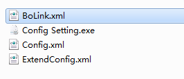
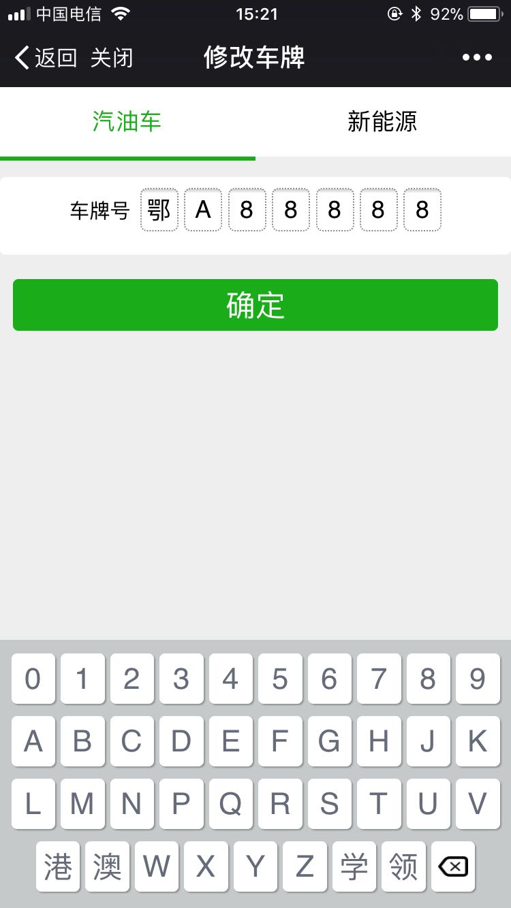
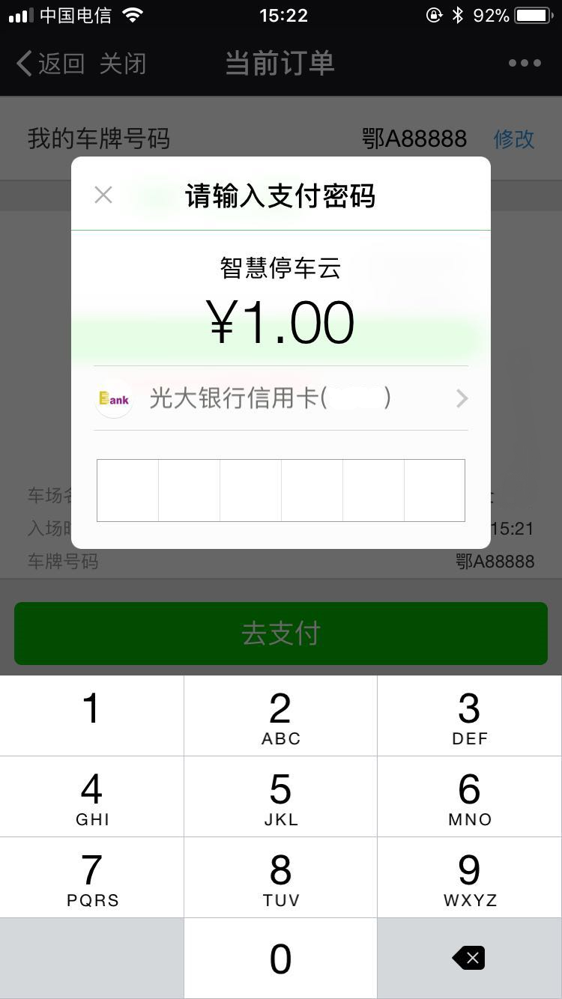
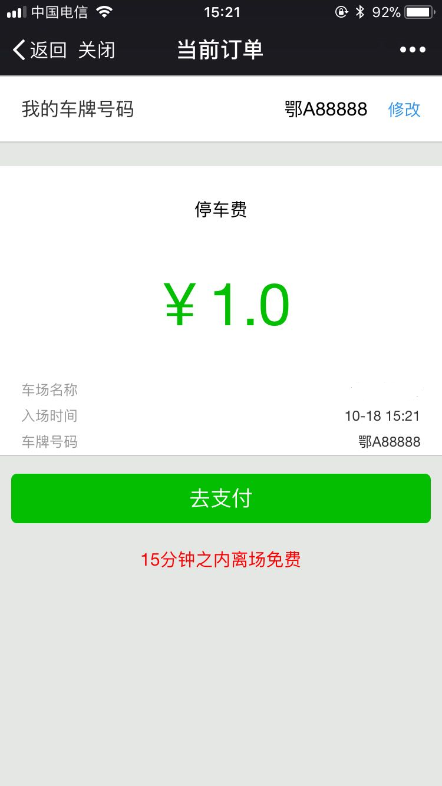
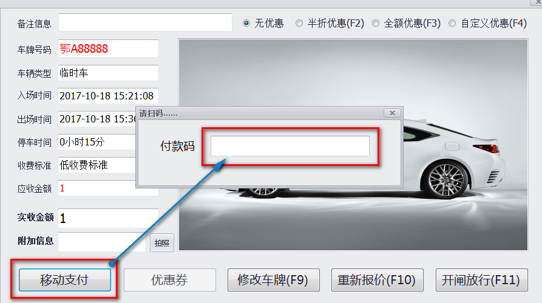

移动支付
停车场开通移动支付功能后,车主就可以使用微信或者支付宝扫码支付出场.
停车场必须能够访问外网
停车场经营人提供收款账户,联系人信息,停车场信息等给我司,我司负责开通移动支付功能.
具体需要提供的信息请参照以下两表.
对私账户需要提交的材料表:点击下载
对公账户需要提交的材料表:点击下载
资料提交后,一般情况下当天即可审核.
审核通过后,我司提供对应的支付参数文件和二维码,使用方将该文件拷贝到软件目录下即成功开通移动支付.

二维码需要使用方制作成物料张贴在停车场醒目处供车主扫码使用.
移动支付功能本质上是移动预支付,属于中央收费的一种.车主扫码支付后,在有限的时间内将车场开出场不会重复收费.
所以建议停车场经营方将支付二维码多张贴几张在车场内,方便车主使用.
首先软件要进入实时监控,且能成功访问到外网.
测试能否访问外网的方法很简单,打开浏览器,能登入百度首页即是可访问外网.
然后车主用微信或支付宝扫描支付二维码,扫描成功后会跳转到支付界面,如下图:



此种方式下,车主不用扫描二维码,但需要岗亭配备一台扫码枪.
车主将车开至出口处,软件会提示该车需要缴纳的停车费用.

车主打开微信或支付宝的付款界面
收费员用扫码枪扫一下付款码完成收费.
a.每笔支付交易,微信或支付宝会抽取千分之六的交易费.
b.每天通过移动端收取的车场营业额,第二天自动转到登记的银行卡账户下,即“T+1”的转账模式.
c.营业额累计金额小于100元的,需等金额超过100元才会自动转出.
d.小于100元的营业额需强制转出的,会收费每笔3元的手续费.
e.大于500元的营业额强制转出,不收取手续费.